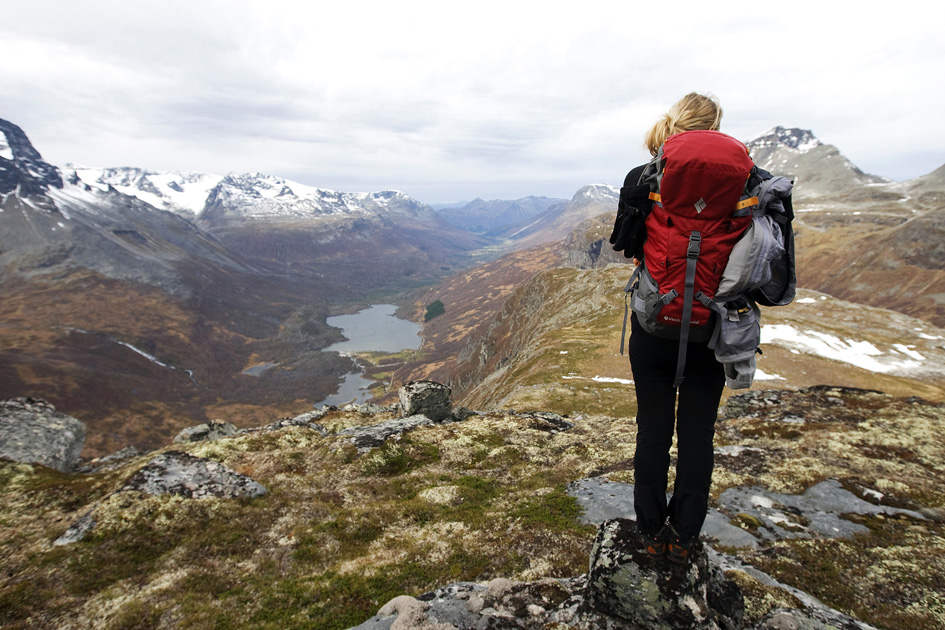
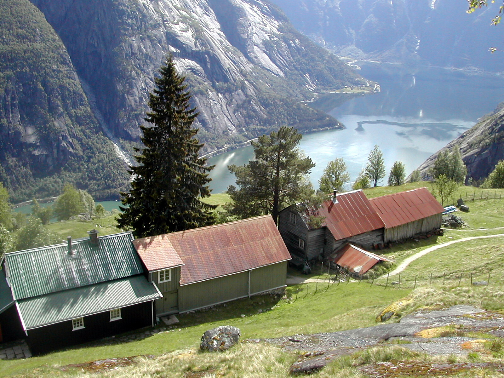
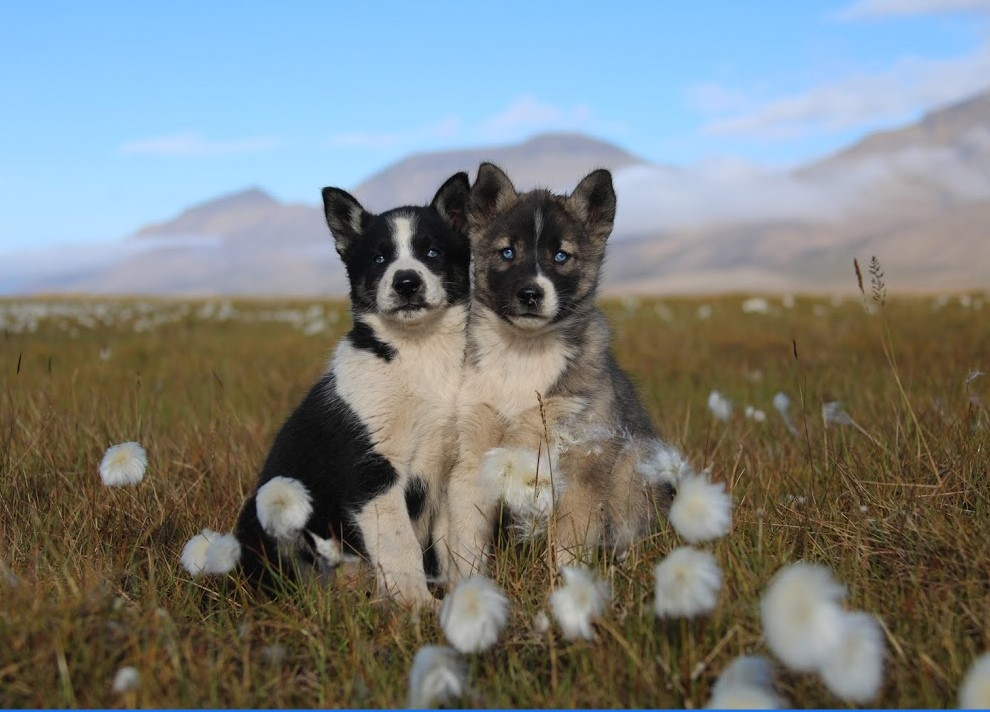
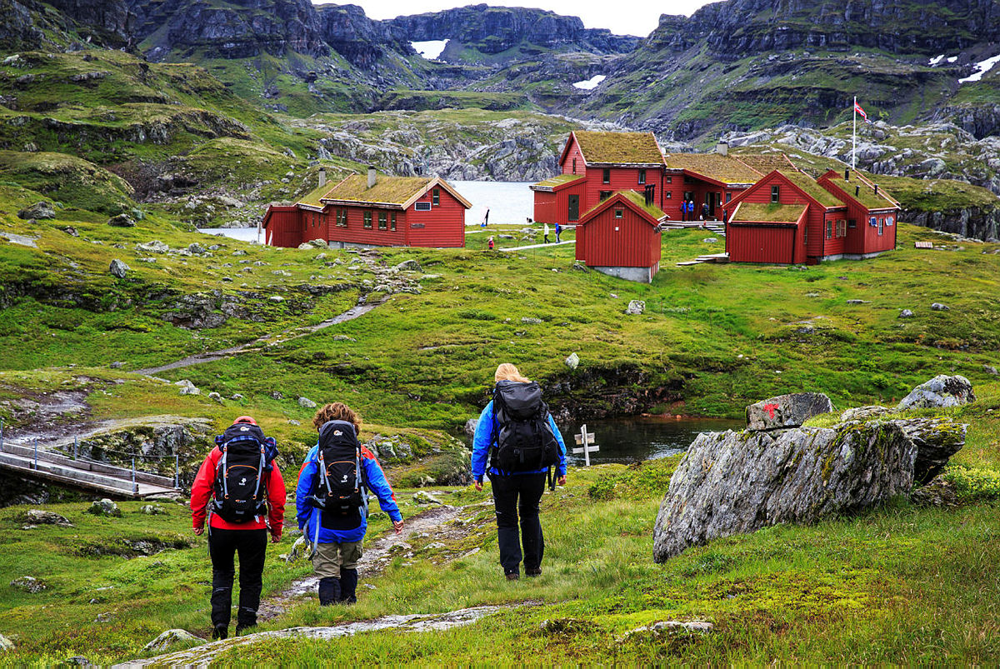

СХОДЖЕННЯ НА ВЕЖУ ІНДЕРДАЛЕНА
Parking Place Innerdalen/ Nerdalen, Sunndal / +47 95231240

Підніміться на класичну вежу Іннердален, на висоті 1,452 метра над рівнем моря!
Іннердален - це велична гора в Іннердалені. Іннердален - це долина, відома тим, що є однією з найбільш красиві долини в Норвегії.
Ми зустрінемось біля парковки в Іннердалені, і підемо повільно до літньої ферми Рендольсетра, приблизно 1 годину. (або ми можемо зустрітися у Рендольсетрі чи Іннердальшитті). Звідти ми почнемо похід на озеро; Гіклінгватнет, перш ніж розпочати останню піднятися на вершину. Екскурсія виставлена, але вам не потрібно будь-який досвід обробки.
ШЛЯХ ДО КЕЙСЕНСЬКОЇ ФІРМИ
+47 53673400

Поверніть ліворуч і йдіть уздовж фіорду, поки не дійдете Кєанесет (будинок на човні). На Кєанесет поверніть праворуч і йдіть стежкою по дуже крутій гірській стороні. Мотузки та драбини на частинах стежки. НЕ пішки, коли стежка мокра або засніжена або льоду. Деякі частини слизькі, і для цього походу потрібні туристичні черевики та чудові обережність. Майте на увазі круті скелі. Чудові краєвиди вздовж стежки та з Кьезена.
КОЛЕСА НА СОБАКАХ - ЗЕЛЕНИЙ СОБАКА СОБАКИ
Green Dog A/S, Longyearbyen, Spitsbergen / +47 94007478

Коли на початку червня сніг починає танути, ми починаємо користуватися собачими візками замість саней. Під час цієї поїздки ви їдете на візку для 3 осіб із 8 хаскі Наш гід допоможе вам запрягти собак і їздити перед вами Подорож проходить через прекрасний Адвентдален, який пропонує унікальні пропозиції, арктична природа і багато оленів!
ЯЗИК ТРОЛЯ
Skjeggedal, Ullensvang / +47 48070777
На західному краю плато Хардангервідда ви знайдете Язик Троля - найвидовищніша гірська формація в Норвегії. Язик Троля - це скеля, що виступає 700 метрів над озером Рінгедальсватнет! Похід високогірною місцевістю вгору до Троллунги довгий і вимогливий, але ви будете винагороджені чудовими видами. Стежка до Язика Троля, розташована на висоті 1180 метрів, зазначена вказівниками. З основного траси на Р2 у Ск'єґедалі, похід в обидва кінці становить 28 км із підйомом на майже 800 метрів. Орієнтовний час походу становить 8–12 годин. Існує додатковий слід на P3 Мегелітопп. Похід в обидва кінці від P3 Мегелітопп становить 20 км з підйомом близько 320 метрів. Орієнтовний час походу становить 7–10 годин.
СТРАНДАЛЕН З ВЕРХНЬОГО МОЕНУ
Stranddalen, Suldal / +47 51840200

Гірський будинок Странддальшитта - перлина заповідника СВР Рифилкекеяне. Він прекрасно лежить на березі високогірного озера. У літні місяці він повністю обслуговується, і на вас чекає хороше ліжко та тепла їжа!
Підписатися на розсилку